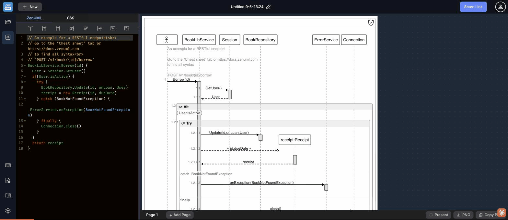

Test scenario: Keyboard Shortcuts & Cheat Sheet — discoverability, content completeness, terminology · ZenUML Web Sequence · 2026-05-09
The keyboard shortcut to open the shortcuts modal is Ctrl/⌘ + Shift + ? — but this is only discoverable by already opening the modal via the unlabeled sidebar icon. New users have no way to know the shortcut exists without first finding the icon. The default diagram's code comment hints "Go to the Cheat sheet tab" but there is no visible tab labelled "Cheat sheet" — users must hunt for the unlabeled sidebar icon that reveals it.

The sidebar has two distinct help panels: "Keyboard Shortcuts" (keyboard icon) and "Cheat sheet" (document-info icon). Both are accessed via unlabeled icons with no hover tooltips. Users have no way to know which icon opens which panel without clicking both. Splitting help content across two unlabeled modals fragments the experience and increases cognitive load.
The pre-loaded example diagram includes the comment // Go to the "Cheat sheet" tab or https://docs.zenuml.com. There is no visible "Cheat sheet tab" in the interface. Users who follow this instruction will look for a tab in the editor header (ZenUML / CSS) and find nothing. The comment refers to the unlabeled sidebar icon, which appears nowhere near a "tab" in the conventional sense.
// Click the book icon (left sidebar) or press Ctrl+Shift+? for syntax help. Alternatively, rename the sidebar icon's panel to match the comment.The shortcuts modal lists Tab → Emmet code completion. Emmet is an HTML/CSS abbreviation expander with no recognized meaning in sequence diagram editing. ZenUML users (software architects, developers documenting APIs) won't know what "Emmet completion" means for participant/message syntax. The label misleads about what Tab actually does in this editor.
Tab → Emmet code completion
Tab → Auto-complete syntax
The Cheat Sheet modal shows: Participant, Message, Async message, Nested message, Self-message, Alt, Loop — and the modal bottom is flush with the viewport edge. Scrolling inside the modal does not reveal additional content. ZenUML supports more constructs (title, note, divider, group, stereotype, opt, par, etc.) that are entirely absent. The cheat sheet is incomplete and gives users a false sense they've seen the full syntax.
The Global shortcuts list contains Ctrl/⌘ + Shift + 5 for "Refresh preview" — a non-intuitive binding (5 has no mnemonic connection to refresh). There are no shortcuts for adding a page, switching pages, or toggling panels. Power users who want keyboard-only workflows are blocked from diagram-level navigation.